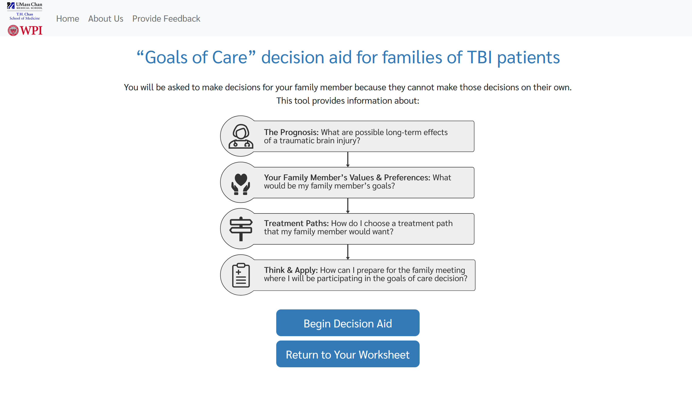
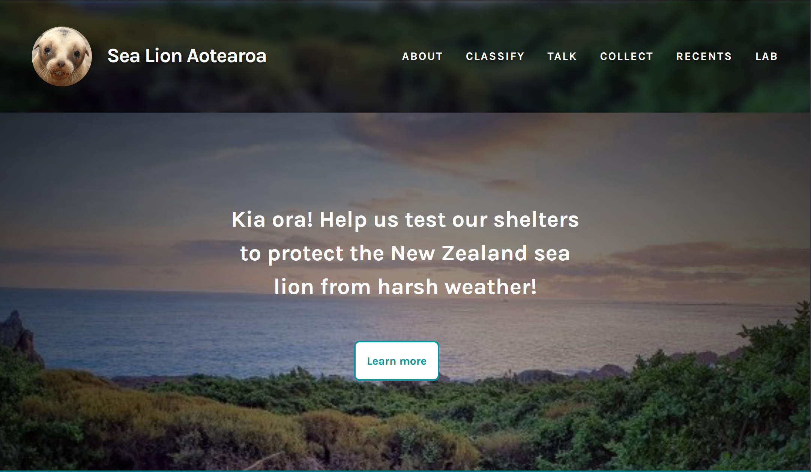
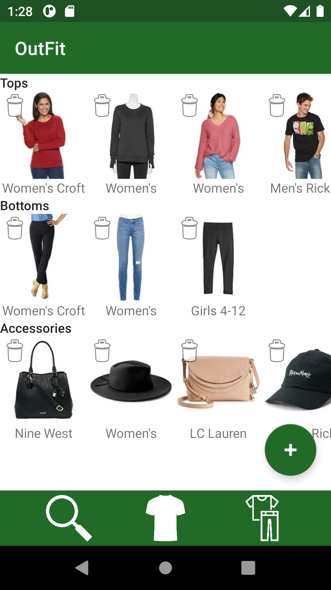

Work Experience

This is an online decision aid tool for surrogates making treatment decisions for family members with serious illness
April 2022-Present
Job Title: Research Assistant
Languages: Python, HTML, JavaScript
Academic Projects

This citizen science platform allows users to examine images and log information. This was designed to help the New Zealand Department of Conservation test efficacy of shelters.
IQP: January 2022-March 2022
Languages: Python

This is an Android application for logging clothing using the device camera and Kohl's API, as well as combining clothing items into outfits
CS 4518: August 2021-October 2021
Languages: Kotlin, SQL
This is a .jar application to create mock requests for Brigham & Women's Hospital staff and navigate the hospital map
CS 3733: March 2021-May 2021
Assistant Lead/Backend Database Specialist
Languages: Java, SQL